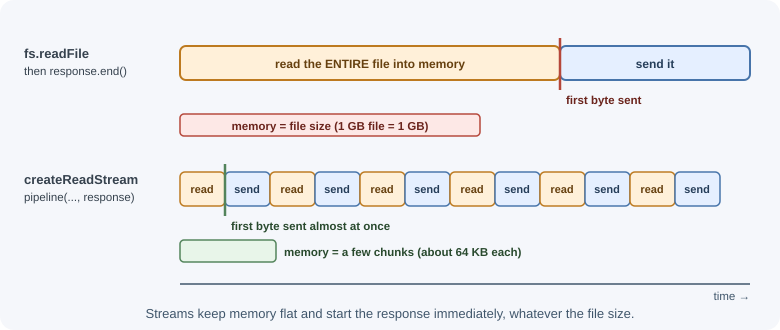
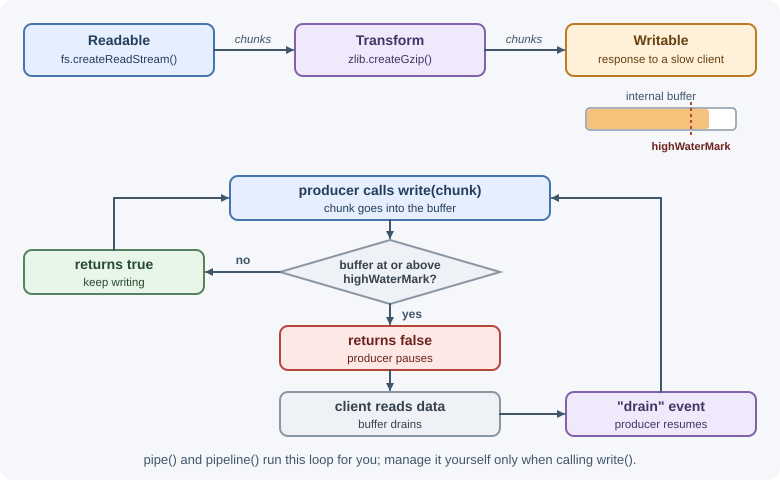

Buffers and Streams¶
Servers constantly move bytes: request bodies, uploaded files, database results, compressed responses. A Buffer holds a fixed chunk of raw binary data in memory. A stream processes data piece by piece as it arrives, instead of waiting for all of it. Streams are how Node.js handles large or continuous data without running out of memory.
Why it matters¶
Reading a 1 GB file into memory for every download request will crash a server under load. Streaming the same file uses only a small, constant amount of memory per request and starts sending bytes immediately. HTTP requests and responses, sockets, files, compression, and hashing are all streams in Node.js, so understanding them—especially error handling and backpressure—is essential backend knowledge.
Real-world usage¶
- AWS ships
@aws-sdk/lib-storage, whoseUploadclass accepts buffers, blobs, or streams and sends them to S3 as concurrent multipart uploads. This makes it possible to upload large files, or streams of unknown size, without loading them into memory (AWS SDK for JavaScript v3: lib-storage). - node-postgres offers
pg-query-stream, which delivers query result rows as a readable object-mode stream. A large export can then be piped to a CSV writer and the HTTP response, instead of materialising millions of rows (pg-query-stream). - MongoDB's Node.js driver makes query cursors async iterable, so
for await (const doc of collection.find())processes results one batch at a time (MongoDB docs: Access data from a cursor). - csv-parse from the CSV project is a Transform stream. Its docs recommend the stream API because it "ensures scalability by treating your data as a stream from the source to the destination" (csv-parse docs: Stream API).
Popular tools and providers: node:stream, node:zlib, and
stream/promises; @aws-sdk/lib-storage for S3; busboy (used by Multer)
for streaming multipart uploads; csv-parse and csv-stringify.
How it works¶
Binary data and Buffers¶
Text is ultimately bytes. A Buffer is a fixed-length sequence of bytes
(values 0–255). In Node.js, Buffer is a subclass of the standard
Uint8Array, so it works with web APIs that accept typed arrays.
const fromText = Buffer.from("Héllo", "utf8"); // encode text to bytes
console.log(fromText); // <Buffer 48 c3 a9 6c 6c 6f>
console.log(fromText.length); // 6 bytes (é takes 2 bytes in UTF-8)
console.log(fromText.toString("utf8")); // "Héllo"
const zeroed = Buffer.alloc(10); // 10 bytes, all zero
const fast = Buffer.allocUnsafe(10); // 10 bytes, NOT cleared
const fromArray = Buffer.from([0x48, 0x69]); // "Hi"
| Method | Behavior |
|---|---|
Buffer.from(string, encoding) |
Encodes a string into bytes. |
Buffer.from(array or arrayBuffer) |
Creates bytes from numbers or wraps existing memory. |
Buffer.alloc(size) |
New zero-filled buffer. Safe default. |
Buffer.allocUnsafe(size) |
New buffer that may contain old memory contents. Faster, but you must overwrite every byte before exposing it. |
Buffer.concat(list) |
Joins buffers into one new buffer. |
buf.toString(encoding) |
Decodes bytes to a string. |
buf.subarray(start, end) |
A view of part of the buffer (shares memory). |
buf.equals(other) |
Byte-by-byte comparison. |
Encodings¶
| Encoding | Use |
|---|---|
utf8 |
Default for text. Characters take 1–4 bytes. |
base64 |
Binary as ASCII text (email attachments, data URLs, JSON payloads). |
base64url |
Base64 with URL-safe characters (- and _, no padding); used in JWTs. |
hex |
Two hexadecimal characters per byte (hashes, IDs). |
latin1 / ascii |
Legacy single-byte encodings. |
const secret = Buffer.from("api-key-123");
const b64 = secret.toString("base64"); // "YXBpLWtleS0xMjM="
Buffer.from(b64, "base64").toString(); // "api-key-123"
Base64 is not encryption
Base64 is an encoding anyone can reverse. Never use it to "hide" secrets.
Slices share memory¶
const original = Buffer.from("hello");
const part = original.subarray(0, 2); // "he" — a view, not a copy
part[0] = 0x4a; // "J"
console.log(original.toString()); // "Jello" — original changed too
Use Buffer.from(part) when you need an independent copy. (buf.slice()
on a Buffer also shares memory, unlike Uint8Array.prototype.slice, which
copies. buf.slice() has been deprecated since Node.js 17.5; use
subarray, which also makes the sharing obvious.)
Why streams¶

Streams give constant memory use and faster time-to-first-byte, and they let you chain processing steps: read → decompress → parse → write.
The four stream types¶
| Type | Direction | Examples |
|---|---|---|
| Readable | A source you read from | fs.createReadStream, an incoming HTTP request, process.stdin |
| Writable | A destination you write to | fs.createWriteStream, an HTTP response, process.stdout |
| Duplex | Both readable and writable, independently | TCP sockets (net.Socket) |
| Transform | A duplex whose output is computed from its input | zlib.createGzip(), crypto.createHash() (as a stream), CSV parsers |
Reading modes and events¶
A readable stream starts in paused mode. It switches to flowing mode
when you attach a data listener, call resume(), or pipe it somewhere. In
flowing mode it pushes chunks as fast as they arrive.
Important events:
| Stream | Event | Meaning |
|---|---|---|
| Readable | data |
A chunk is available. |
| Readable | end |
No more data will come. |
| Writable | finish |
All data has been flushed after end() was called. |
| Writable | drain |
The internal buffer emptied; safe to write more. |
| Both | error |
Something failed. Always handle it. |
| Both | close |
The underlying resource was closed. |
Backpressure¶
If a readable source is faster than a writable destination—for example, reading from a fast disk and sending to a slow mobile client—data piles up in memory. Backpressure is the mechanism that slows the source down.
- Every stream has an internal buffer whose size limit is its
highWaterMark(a byte count, or a number of objects in object mode). writable.write(chunk)returnsfalsewhen the buffer is at or above the limit. The producer should stop writing.- The writable emits
drainwhen it can accept more data.

pipe() and pipeline() handle backpressure automatically. You only manage
it yourself when calling write() manually.
pipe() versus pipeline()¶
readable.pipe(writable) connects streams and handles backpressure, but it
does not forward errors or clean up: if one stream fails, the others may
stay open and leak resources.
stream.pipeline() connects any number of streams, handles backpressure,
propagates errors, and destroys the streams when one of them fails
(except those that have already ended or finished). Use the promise version
from node:stream/promises:
import { pipeline } from "node:stream/promises";
await pipeline(source, transformA, transformB, destination);
// Resolves when everything finished; rejects if any step failed.
Object mode¶
By default streams carry Buffers or strings. In object mode
(objectMode: true) each chunk can be any JavaScript value, which is useful
for streams of records, such as rows from a database cursor.
Creating streams from data¶
import { Readable } from "node:stream";
const numbers = Readable.from([1, 2, 3]); // from an iterable
const lines = Readable.from(generateLinesAsync()); // from an async generator
Async iteration¶
Readable streams are async iterables, the simplest way to consume them:
for await (const chunk of readable) {
console.log("got", chunk.length, "bytes");
}
The loop respects backpressure, and errors are thrown inside the loop so a
normal try/catch works.
Web streams interoperability¶
Node.js also implements the web-standard ReadableStream, WritableStream,
and TransformStream. For example, fetch() returns a web stream as
response.body. Convert between the two families:
import { Readable } from "node:stream";
const response = await fetch("https://example.com/large.csv");
const nodeStream = Readable.fromWeb(response.body); // web → Node.js stream
const webStream = Readable.toWeb(nodeStream); // Node.js → web stream
Readable.fromWeb() is marked stable from Node.js 22.17.0 and 24.0.0.
When to use and when not to use¶
- Use streams when the data is large, unbounded, or arrives over time: file downloads and uploads, exports, proxies, log processing, compression.
- Use streams when you want the first bytes to reach the client before the whole result exists.
- Use Buffers for small binary payloads you need in full: a hash, an image thumbnail, a signed token.
- Do not stream small JSON responses or configuration files; a plain
await readFileorres.json()is simpler and just as fast. - Do not hand-roll
write()loops whenpipeline()can connect the pieces; manual loops are where backpressure bugs come from.
| Data size and shape | Choose | Why |
|---|---|---|
| Small (KBs), needed whole | Buffer / string | Simplest code |
| Large file to send or store | pipeline(readStream, ...) |
Constant memory, backpressure handled |
| Records from a database or CSV | Object-mode stream or async iterator | One record at a time |
Data from fetch() |
Web stream, or Readable.fromWeb |
response.body is a web stream |
Practical examples¶
Copying a large file¶
import { createReadStream, createWriteStream } from "node:fs";
import { pipeline } from "node:stream/promises";
await pipeline(
createReadStream("video.mp4"),
createWriteStream("video-copy.mp4"),
);
console.log("Copied with constant memory use");
Compressing a file with gzip¶
import { createReadStream, createWriteStream } from "node:fs";
import { createGzip } from "node:zlib";
import { pipeline } from "node:stream/promises";
await pipeline(
createReadStream("access.log"),
createGzip(), // Transform: bytes in, compressed bytes out
createWriteStream("access.log.gz"),
);
Writing a Transform stream¶
import { Transform } from "node:stream";
import { pipeline } from "node:stream/promises";
const upperCase = new Transform({
transform(chunk, encoding, callback) {
callback(null, chunk.toString().toUpperCase()); // pass result on
},
});
await pipeline(process.stdin, upperCase, process.stdout);
// echo "hello" | node upper.js → HELLO
Save it as upper.mjs, or as upper.js in a "type": "module" project,
because it uses top-level await.
The transform function receives each chunk and calls callback(error,
output) when done. Implement flush(callback) if you need to emit
remaining data at the end.
Streaming a file as an HTTP response¶
import { createServer } from "node:http";
import { createReadStream } from "node:fs";
import { stat } from "node:fs/promises";
import { pipeline } from "node:stream/promises";
createServer(async (request, response) => {
try {
const file = "./reports/annual.pdf";
const { size } = await stat(file);
response.writeHead(200, {
"Content-Type": "application/pdf",
"Content-Length": size,
});
await pipeline(createReadStream(file), response); // response is Writable
} catch (error) {
if (!response.headersSent) {
response.writeHead(error.code === "ENOENT" ? 404 : 500);
response.end();
} else {
response.destroy(error); // headers already sent: abort the connection
}
}
}).listen(3000);
If the client disconnects mid-download, pipeline destroys the file stream
so the file handle is not leaked.
Respecting backpressure manually¶
import { createWriteStream } from "node:fs";
import { once } from "node:events";
const out = createWriteStream("numbers.txt");
for (let i = 0; i < 1_000_000; i++) {
if (!out.write(`${i}\n`)) {
await once(out, "drain"); // wait instead of filling memory
}
}
out.end();
await once(out, "finish");
Best practices¶
- Stream large or unbounded data (files, exports, proxies, uploads) instead of buffering it.
- Use
pipelinefromnode:stream/promises, not barepipe(). - Always handle
errorevents, or letpipeline/for awaitsurface them. - Respect
write()'s return value when writing manually. - Limit the total size of data you accept from clients, even when streaming.
- Prefer
Buffer.allocoverBuffer.allocUnsafeunless you fill the buffer immediately. - Use
subarraydeliberately and copy when you need independent data.
In production¶
- Memory climbs during downloads or exports.
- Symptom: RSS grows by roughly the file size per concurrent request, and the container is killed for exceeding its memory limit.
- Detect: memory graphs line up with traffic to the export endpoint, and
heap snapshots show large
Buffers or strings. - Cause: reading the whole file or result set before sending it.
- Fix: stream from the source with
pipeline(), and setContent-Lengthonly when the size is known. - File handles leak when clients disconnect.
- Symptom:
EMFILE: too many open filesafter a while, especially with mobile clients. - Detect: open file descriptor counts rise in step with aborted requests.
- Cause:
readable.pipe(res)without error handling; when the client disconnects, the file stream is never closed. - Fix: use
pipeline(), which destroys the other streams when one fails. - Corrupted text in uploads or logs.
- Symptom: accented characters or emoji appear as
�at random places. - Detect: the corruption falls on chunk boundaries, and small inputs are fine.
- Cause: converting each chunk to a string separately, which splits a multi-byte UTF-8 character.
- Fix: collect Buffers with
Buffer.concat, or callstream.setEncoding("utf8"), which handles split characters. - Slow clients exhaust memory.
- Symptom: a few slow consumers (WebSockets, slow mobile downloads) make memory grow without limit.
- Detect:
writable.writableLength(bytes buffered) keeps rising for some connections. - Cause: code ignores
write()returningfalseand keeps writing. - Fix: wait for
drain, or close connections whose buffer exceeds a limit.
Important terminology¶
- Buffer: A fixed-size chunk of binary data; a
Uint8Arraysubclass. - Encoding: A scheme mapping bytes to text, such as UTF-8 or Base64.
- Stream: An object that delivers or accepts data incrementally.
- Readable / Writable / Duplex / Transform: The four stream types.
- Chunk: One piece of data delivered by a stream.
- Backpressure: Slowing a producer when the consumer cannot keep up.
highWaterMark: The buffer size at which a stream signals backpressure.pipeline: A utility that connects streams with error propagation and cleanup.- Object mode: A stream mode where chunks are arbitrary JavaScript values.
Common mistakes and misconceptions¶
- Using
pipe()without error handling, leaking file handles and sockets when a step fails. - Ignoring
write()returningfalse, letting memory grow without limit. - Converting binary data to strings (for example, concatenating chunks
with
+=), which corrupts multi-byte characters split across chunks. UseBuffer.concator set an encoding on the stream. - Assuming one
dataevent equals one message. Chunk boundaries are arbitrary; a JSON object or line may span several chunks. - "Base64 protects data." It is only an encoding.
- Forgetting that
subarrayshares memory.
Revision questions¶
- Why does streaming a file use less memory than
readFile? - Name the four stream types and give an example of each.
- What is backpressure, and which signals implement it?
- Why is
pipelinepreferred overpipe? - What is the difference between
Buffer.allocandBuffer.allocUnsafe? - Why can't you assume each
dataevent contains a complete line?